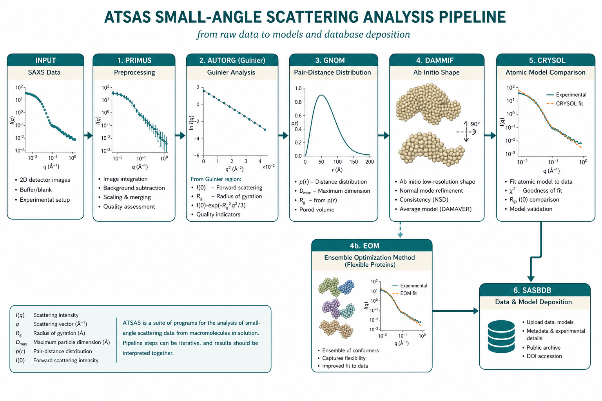

ATSAS：溶液 SAS 分析工具链
PRIMUS → Guinier → GNOM → DAMMIF → CRYSOL / EOM
本导读以 Franke 等（2017）ATSAS 2.8 程序包综述为主线，结合 Petoukhov 等（2012）与 Petoukhov & Konarev 等（2007）早期 ATSAS 发展、Franke & Svergun（2009）DAMMIF、Petoukhov & Svergun（2013）生物应用边界、Trewhella 等（2017）发表指南与 Jeffries 等（2021）方法学 Primer，说明溶液 SAS 从 $I(q)$ 到整体参数、实空间、$ab\ initio$ 形状与原子模型比较的推荐工作流与解读陷阱。焦点是管线逻辑与判断标准，而非安装或界面操作。

问题是什么
溶液 SAXS/SANS 给出的是一条（或少数几条）一维曲线 $I(q)$。从曲线到「结构结论」通常分多层——ATSAS 2.8 将每层对应到可脚本化的 DATTOOLS 子程序（Franke 2017）：
- 整体参数： $R_g$、$I(0)$、分子量估计、Porod 体积；
- 实空间： $p(r)$ 与 $D_{\max}$（经 IFT/GNOM）；
- 低分辨形状： 哑原子模型（DAMMIF/DAMMIN）及多轮平均；
- 与已知结构对照： CRYSOL（X 射线）等从原子坐标算理论 $I(q)$；
- 柔性体系： 单一刚体不够时用 EOM 等系综方法。
ATSAS（EMBL Hamburg）把上述步骤做成可串联的模块：PRIMUS/qt 作交互入口，DATTOOLS 做批处理，GNOM、DAMMIF、CRYSOL、EOM 等各司其职（Franke et al. 2017）。2.8 版新增 AMBIMETER（形状歧义评分）、DATCLASS（紧凑/扁平/无序分类）、CHROMIXS（SEC 联用）、SASRES（FSC 分辨率估计）、SHANUM（有效 $q$ 范围）、SREFLEX/SASREF（柔性/刚体混合）等——使「该不该建模、用哪种建模」可在进入 DAM 之前有定量依据。核心难题不是「会点哪个按钮」，而是：前一步数据/假设不合格时，后一步的漂亮拟合往往是假阳性；以及如何按发表规范报告与存档（Trewhella 2017 → SASBDB）。
文献主线
Franke et al. 2017：ATSAS 2.8 管线地图
综述按「数据工具 → 整体参数 → 实空间 → 形状/刚体/系综」组织程序族：
- PRIMUS / DATTOOLS： DATCMP/CORMAP 比较曲线显著性；DATAVER 平均重复测量；DATMERGE/ALMERGE 合并浓度系列或外推无限稀释；DATABSOLUTE 绝对标定（水/玻璃碳）；SHANUM/DATCROP 确定有效 Shannon 通道与 $q$ 范围；AUTORG/DATRG 自动 Guinier；
- GNOM / DATGNOM： 正则化 IFT，输出 $p(r)$、$R_g$、$I(0)$、$D_{\max}$；GNOM5（2.8 默认）支持多探测器 SANS 数据联合反演；
- DATCLASS / AMBIMETER： 建模前分类（紧凑/扁平/无序）与歧义评分（$<1.5$ 较唯一，$>2.5$ 高歧义）；
- DAMMIN / DAMMIF / GASBOR： 哑原子或 dummy residue $ab\ initio$ 形状；DAMMIF 比 DAMMIN 快 25–40 倍，无限搜索体积（Franke & Svergun 2009）；DAMAVER/DAMSEL/DAMCLUST 聚类与选代表模型；SASRES 报告 FSC 分辨率；
- MONSA / SASREFCV： 多相/衬度变化数据联合重建（与 SANS 衬度 联用）；
- CRYSOL / CRYSON / CRYSOL 3： 原子结构 → 理论散射，含水合壳层；
- EOM / SREFLEX / SASREF： 柔性系综、正常模柔性精修、刚体拼合；
- CHROMIXS： SEC-SAXS 帧选取与在线分析接口。
设计哲学是「小工具可组合」：交互界面与命令行批处理（DATTOOLS）共享同一算法内核，便于可重复脚本化分析（Franke 2017）。
Petoukhov et al. 2012 与 Petoukhov et al. 2007
2012 综述 ATSAS 2.5 时代的程序族演进（AUTORG、AUTOGNOM、在线服务），是理解 DATTOOLS 命名与批处理逻辑的桥梁；2007 文记录 ATSAS 2.1 向自动化/Web 支持的转折。两篇共同强调：ATSAS 各模块应对照样品状态选用——整体参数与 $p(r)$ 是稳健起点；聚集、寡聚平衡、IDP 不宜默认跑完全部管线。
Franke & Svergun 2009：DAMMIF 算法要点
DAMMIF 重写 DAMMIN 的模拟退火搜索：哑原子（dummy atom/bead）模型用球谐加速计算散射；目标函数 = 数据残差 + 紧致/连通惩罚。关键实践：（1）至少 10–20 轮独立运行（AMBIMETER 高时更多）；（2）对称性（P2、P3…）须有生化或 EM 依据；（3）DAMMIF 从 DATCLASS 预测的紧凑初体出发，避免有限搜索体积伪影；（4）发表用 DAMSTART 精修后的模型，而非 DAMAVER 占用包络（包络散射不匹配数据）。
Petoukhov & Svergun 2013：生物语境下的用途边界
该文把溶液 SAS 放在生物大分子表征框架中：整体参数与 $p(r)$ 是稳健起点；$ab\ initio$ 与刚体建模需样品单分散；柔性蛋白、寡聚平衡不宜强行单一珠粒模型。ATSAS 各模块应对照样品生物学状态选用，而非默认跑完全部管线。
Trewhella 2017：发表与 SASBDB 心态
更新版发表指南要求报告样品、采集/还原、整体参数验证、建模歧义性；强烈建议将 $I(q)$、$p(r)$ 与模型存入公共库（SASBDB）。用 ATSAS 分析时，应把「可复现报告」当作管线终点：ATSAS 版本号、Guinier 拟合区间、$D_{\max}$/对称性假设、多轮 DAM 聚类结果、SASRES 分辨率与 AMBIMETER 分数均需可追溯。
Jeffries et al. 2021：方法学入门与质量意识
Nature Reviews Methods Primer 从实验到分析给出现代溶液 SAS 全景：强调浓度系列、缓冲匹配、辐射损伤与 SEC-SAS；分析侧与 ATSAS 类管线一致——先 QC 与 Guinier/$p(r)$，再谈建模。本站将其作为「为何不能跳过 PRIMUS/Guinier」的外层文献锚点。
DATTOOLS 批处理与 PRIMUS 的对应关系
| 任务 | 命令行工具 | PRIMUS/qt 等价 | 典型输出 |
|---|---|---|---|
| 曲线比较 | DATCMP, CORMAP | Compare | 是否可平均/合并 |
| 浓度合并 | DATMERGE, ALMERGE | Merge | 无限稀释 $I(q)$ |
| 绝对标定 | DATABSOLUTE | Scale → Absolute | $\mathrm{cm}^{-1}$ 强度 |
| Guinier | AUTORG, DATRG | Analysis → Guinier | $R_g$, $I(0)$ |
| IFT | DATGNOM, GNOM | Analysis → GNOM | $p(r)$, $D_{\max}$ |
| 分子量 | DATABSMW, DATMOW, DATVC | MW 工具 | $M$ 估计 |
| 有效 $q$ 范围 | SHANUM, DATSHANUM | — | Shannon 通道数 |
高通量管线（同步辐射在线分析）常串联 DATGNOM → DAMMIF → DAMAVER，但人工 QC 节点不可省略（Jeffries 2021；Trewhella 2017）。CHROMIXS 将 SEC 色谱帧选取嵌入同一逻辑。
关键公式与结论
管线对应的物理量
Guinier 区（AUTORG / PRIMUS）：
$$I(q)=I(0)\exp\left(-\frac{R_g^2 q^2}{3}\right), \quad q R_g \lesssim 1.3.$$合格判据：$R_g$ 与 GNOM 从 $p(r)$ 导出的 $R_g$ 宜在约 $\pm 5\%$ 内一致；线性残差无系统趋势。
IFT / GNOM：
$$I(q)=\int_0^{D_{\max}} p(r)\,\frac{\sin(qr)}{qr}\,\mathrm{d}r$$（仪器 smearing 时核更复杂；见 IFT 专题）。$p(r)$ 是进入 DAMMIF 的标准输入之一。
哑原子模型拟合实验曲线时，目标函数含数据残差与紧致/连通惩罚项（DAMMIN/DAMMIF）；多轮独立运行后 DAMSEL/DAMCLUST 聚类，SASRES 用 FSC 思路估计有效分辨率（Franke 2017）。AMBIMETER 分数 $>2.5$ 时须报告多簇模型而非单一形状。
CRYSOL：由原子坐标与水合壳层参数计算理论 $I_{\mathrm{calc}}(q)$，用约化 $\chi^2$（或 CORMAP 类无误差棒检验）判断是否与溶液数据相容——晶体结构未必等于溶液构象。CRYSOL 3（2.8 测试版）用表面水珠粒分层处理凹凸表面水合，改善高 $q$ 拟合。
推荐工作流（解读层）
| 步骤 | 典型工具 | 产出 | 进入下一步的门槛 |
|---|---|---|---|
| 0. 歧义预判 | DATCLASS / AMBIMETER | 形状类、歧义分数 | 无序 → EOM；高歧义 → 多轮 DAM + 聚类报告 |
| 1. 预处理 | PRIMUS / DATTOOLS | 减背景、$I(q)$ 合并/缩放、DATABSOLUTE | 浓度系列可比；CORMAP 无显著差异再平均；无帧间损伤漂移 |
| 2. 整体参数 | AUTORG / Guinier | $R_g$、$I(0)$、$M$ 初估 | Guinier 线性；$q_{\min}$ 足够低 |
| 3. 实空间 | GNOM / DATGNOM | $p(r)$、$D_{\max}$ | 尾部归零；$R_g$ 与 Guinier 一致 |
| 4. 形状 | DAMMIF / DAMMIN / GASBOR | 珠粒包络、SASRES 分辨率 | $\geq 10$ 轮收敛；对称性有依据；DAMSTART 精修后发表 |
| 5a. 原子对照 | CRYSOL / CRYSON | $\chi^2$、残差曲线 | 壳层与排除体积合理；残差无系统趋势 |
| 5b. 柔性 | EOM / SREFLEX | 构象系综、$R_g$/$D_{\max}$ 分布 | Kratky/柔性证据充分；报告分布非单一结构 |
| 5c. 多组分/衬度 | MONSA / SASREFCV | 分相重建或刚体+衬度联合 | 各衬度点 QC 合格；见 SANS 衬度专题 |
| 6. 存档 | SASBDB 心态 | 可审稿数据包 | 样品+数据+模型+软件版本齐全 |
- PRIMUS 先 QC： DATCMP/CORMAP 比较浓度系列与重复帧；ALMERGE 外推无限稀释；低 $q$ 上翘/下弯未解释前，勿进入 DAM。
- DATCLASS + AMBIMETER： 扁平/无序样品改走 EOM 或刚体+约束，勿强行 DAMMIF。
- Guinier / AUTORG： 记录拟合区间与 $q_{\max} R_g$；与手动 Guinier、GNOM $R_g$ 三方交叉（$\pm 5\%$）。
- GNOM： 扫描 $D_{\max}$；$p(r)$ 在 $D_{\max}$ 附近自然衰减；SHANUM 确认有效 $q$ 范围（详见 IFT）。
- DAMMIF/DAMMIN： 至少十余轮 + DAMSEL 聚类；SASRES 分辨率写入补充材料；对称性须有独立证据。
- CRYSOL： 先固定合理水合壳层再调参；$\chi^2$ 好但残差有系统波纹 → 溶液构象或寡聚态与晶体不符。
- EOM / SREFLEX： 柔性证据明确时用；EOM 报告 $R_g$/$D_{\max}$ 分布相对随机池的变化量。
- CHROMIXS（SEC）： UV–SAXS 对齐后取峰顶帧；勿对拖尾积分。
- SASBDB： 按发表指南打包 $I(q)$、$p(r)$、模型、ATSAS 版本与关键日志（Trewhella 2017）。
常见坑
- 跳过 Guinier / $p(r)$ 直接 DAM → 如何判断： 珠粒模型「好看」但 $R_g$ 与数据不一致，或浓度系列形状不同。回到步骤 2–3。
- 聚集数据做形状重建 → 如何判断： Guinier 低 $q$ 上翘、$I(0)/c$ 随浓度升、$D_{\max}$ 虚高。先 SEC-SAS 或稀释，勿用 DAM 「消化」聚集。
- $D_{\max}$ 凑合 → 如何判断： $p(r)$ 尾部振荡或截断；DAM 包络随 $D_{\max}$ 剧烈变。扫描并报告稳定性。
- 过强对称性约束 → 如何判断： 强制 P2/P3 后 $\chi^2$ 略好但与无对称平均模型拓扑冲突。对称须独立证据。
- 把 CRYSOL $\chi^2$ 当唯一真理 → 如何判断： 误差棒低估会使 $\chi^2\gg 1$ 即使形状合理；改看残差趋势与 CORMAP（Franke 2017）。反之 $\chi^2\approx 1$ 也不能证明唯一构象。
- 柔性体系硬跑 DAMMIF → 如何判断： Kratky 平台高、$p(r)$ 随 $\alpha$ 不稳、多轮 DAM 高度发散。改用 EOM/系综，报告分布而非单一形状。
- 忽略 AMBIMETER 高歧义 → 如何判断： 分数 $>2.5$ 仍只交单一 DAM 图。须 DAMCLUST 多簇 + SASRES，或承认低分辨率形状不确定。
- 用 DAMAVER 包络发表 → 如何判断： 包络散射 $\chi^2$ 远大于 1。用 DAMSTART 精修模型或 CRYSOL 对照结构。
- 只交一张图、不交数据 → 如何判断： 审稿无法复现 $q$ 范围与拟合。按 SASBDB / Trewhella 清单提交原始与派生曲线及 ATSAS 日志。
相关词条
Guinier 分析、 回转半径 $R_g$、 前向散射 $I(0)$、 距离分布函数 $p(r)$、 间接傅里叶变换（IFT）
相关链接
- BioSAS 专题 — 样品 QC、发表与建模歧义性
- IFT / GNOM 专题 — $D_{\max}$、$\alpha$ 与感知准则
- 06 Guinier / Porod — 低 $q$ 与 $R_g$ 学习章
- 07 实空间与 IFT — GNOM 系统讲解
文献列表
- ATSAS 2.8: a comprehensive data analysis suite for small-angle scattering from macromolecular solutions. D. Franke et al. (2017). DOI: 10.1107/S1600576717007786
- New developments in the ATSAS program package for small-angle scattering data analysis. Maxim V. Petoukhov et al. (2012). DOI: 10.1107/S0021889812007662
- ATSAS 2.1 – towards automated and web-supported small-angle scattering data analysis. Maxim V. Petoukhov et al. (2007). DOI: 10.1107/S0021889807002853
- DAMMIF, a program for rapid ab-initio shape determination in small-angle scattering. Daniel Franke, Dmitri I. Svergun (2009). DOI: 10.1107/S0021889809000338
- Applications of small-angle X-ray scattering to biomacromolecular solutions. Maxim V. Petoukhov, Dmitri I. Svergun (2013). DOI: 10.1016/j.biocel.2012.10.017
- 2017 publication guidelines for structural modelling of small-angle scattering data from biomolecules in solution: an update. Jill Trewhella et al. (2017). DOI: 10.1107/S2059798317011597
- Small-angle X-ray and neutron scattering. Cy M. Jeffries et al. (2021). DOI: 10.1038/s43586-021-00064-9
- Advanced ensemble modelling of flexible macromolecules using X-ray solution scattering. Giancarlo Tria et al. (2015). DOI: 10.1107/S205225251500202X